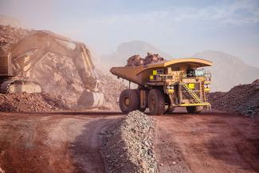
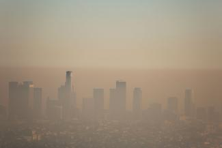

One way recycling can save our planet is by saving forests and other habitats. Forests are cut to produce pulp for making paper. Paper pulp
accounts for 40% of use of the world's timber according to World Wide Fund For Nature. In the tropics, deforestation for paper destroys more forests than mining
or palm oil cultivation points out the Union of Concerned Scientists. Besides reducing tree numbers and species, the associated fauna also get affected as their
habitats are destroyed. Many precious metals like gold, copper, diamonds and metal ores are found in rainforest regions reports Mongabay. Besides loss of forests,
the forests are degraded due to construction of roads through forests, and formation of temporary settlements. Moreover, settlers reduce animal populations by illegal hunting.

Recycling can also reduce engery cosumption. In turn preventing global warming. Large amounts of energy are required to mine raw materials,
process them and transport them around the world. So much of this energy can be saved if manufactured products like plastics, metals, or paper are properly segregated and recycled.
Only 10-15% of energy is needed to recycle glass compared to manufacturing it from scratch, as producing glass requires a lot of heat and energy.
Among all manufactured materials, aluminum production is the most energy intensive. However recycling aluminum can save 94% of this energy.
Similarly recycling other metals like beryllium, lead, iron and steel, and cadmium reduces energy use by 80%, 75%, 72%, and 50%, respectively, compared to new production.
In 2014, the 34.6% of MSW which was recycled saved enough energy "to provide electricity to 30 million homes," according to AGI.
Recycling helps to mitigate climate change. The EPA explains that 42% of the U.S.'s greenhouse gas (GHG) emissions arise due to production, processing,
transport, and disposal of goods including food. These processes are powered by use of fossil fuels, one of the major sources of emissions in the U.S. In 2014, the MSW that
was recycled or composted reduced GHG emissions by 181 million metric tons, outlines the EPA fact sheet.Reduction in any phase of a product's life is how recycling helps the
environment, including the fight against global warming.
